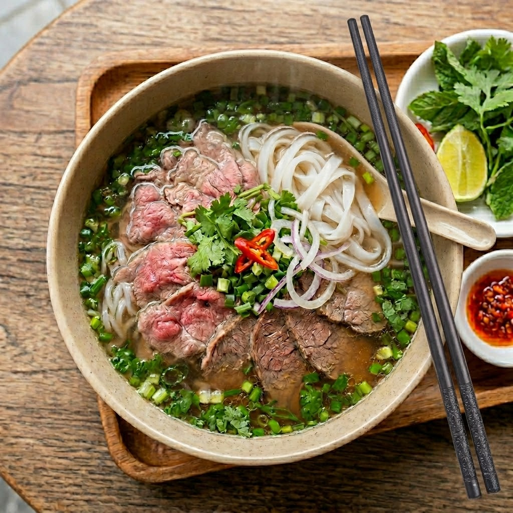

Phở Bò Hà Nội
Tinh hoa đất kinh kỳ
Phở bò là linh hồn và là biểu tượng vẹn nguyên nhất của ẩm thực Thăng Long nghìn năm. Giá trị cốt lõi làm nên bát phở trứ danh nằm ở nồi nước dùng trong vắt nhưng đậm đà, được ninh từ xương bò suốt hơn mười tiếng đồng hồ cùng gừng nướng cháy xém, hành khô, quế chi và thảo quả. Bánh phở mỏng mướt, dẻo dai hòa cùng những lát thịt bò thái mỏng tái mềm, phủ ngập sắc xanh của hành hoa chẻ sợi và rau mùi tàu. Bưng bát phở bốc khói nghi ngút, vắt nhẹ lát chanh cốm và thêm chút giấm tỏi ớt, thực khách sẽ cảm nhận trọn vẹn vị ngọt thanh khiết nguyên bản mà không hề vướng chút ngấy ngậy.
